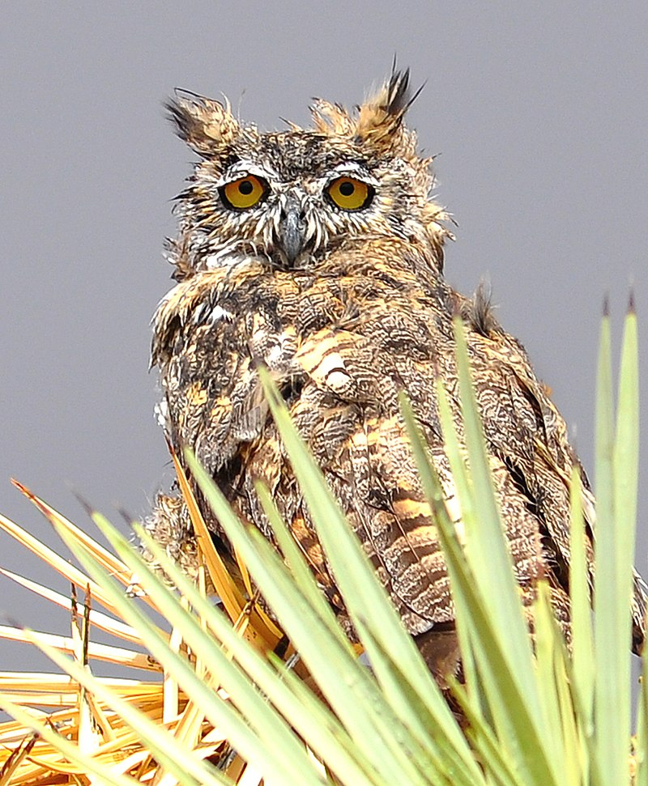

How would you like me to refer to you?
What sort of stuff do you enjoy doing?
What types of music do you usually enjoy listening to? Are there any specific people/groups?
What colours do you like? Do you have a particular favourite?
What is something you are proud of?
What types of foods do you like?
What types of foods do you not like?
What is your favourite aspect ratio (such as in computer monitors and TVs)?
Now for the question that has plagued humanity for generations: Cats or dogs?
What would you name this owl?

Other Questions